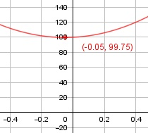

Aufgabe 11 f(x) = 100x2 + 10x + 100 f'(x) = 200x + 10, f''(x) = 200, f'''(x) = 0 Definitionsbereich: -∞ < x < ∞ Wertebereich: 99,75 ≤ f(x) < ∞ Asymptoten: - Symmetrie: - Nullstellen: 100x2 + 10x + 100 = 0 |:100 x2 + 0,1x + 1 = 0 p, q - Formel: p = 0,1, q = 1 x1,2 = x1,2 = -0,05 ± x1,2 = -0,05 ± Der Ausdruck unter der Wurzel (Radikand) ist negativ --> keine Nullstellen Schnittpunkt mit der y-Achse: f(0) = 100 * 02 + 10 * 0 + 100 = 100 Sy(0|100) Extrempunkte: 200x + 10 = 0 |-10 200x = -10 |:200 x = -0,05, f(-0,05) = 100*(-0,05)2 + 10*(-0,05) + 100 = 99,75 f''(x) = 200 > 0 --> Tiefpunkt (-0,05|99,75) Alternativ: Scheitelpunktberechnung f(x) = 100x2 + 10x + 100 |:100 f(x) ------- = x2 + 0,1x + 1 100 f(x) ------- = (x + 0,05)2 - 0 ,0025 + 1 |*100 100 f(x) = 100 * (x + 0,05)2 + 99,75 S(-0,05|99,75) Wendepunkte: 200 = 0 --> Widerspruch, keine Wendepunkte Graph:
